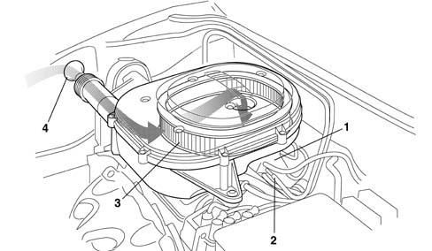
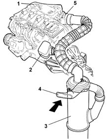

1048A VACUUM AIR CIRCUIT
- Path
- Descriptions > 10 ENGINE > 1048 ENGINE AIR SUPPLY CIRCUIT > 1048A VACUUM AIR CIRCUIT
- Kind
- system description
- Applies to
- engines: 1.2 8v, 1.4 8v, 1.6 16v; all production periods
- Interactive page
- https://sloeber94.github.io/elrnDB-fDbl/en/#/2582283
Subtopics (1)
Applies to: engines: 1.2 8v; all production periods
The air intake circuit consists of various components which ensure that the air flow required by the engine in the various operating conditions is correctly directed.

1, Inlet manifold
2, Engine crankcase gas intake (see 1080)
3, Air filter
4, Intake vent
Applies to: engines: 1.6 16v; all production periods
The air intake circuit consists of various components which ensure that the air flow required by the engine in the various operating conditions is correctly directed.

1, Inlet manifold
2, Resonator
3, Air filter
4, Intake vent
5, Throttle body